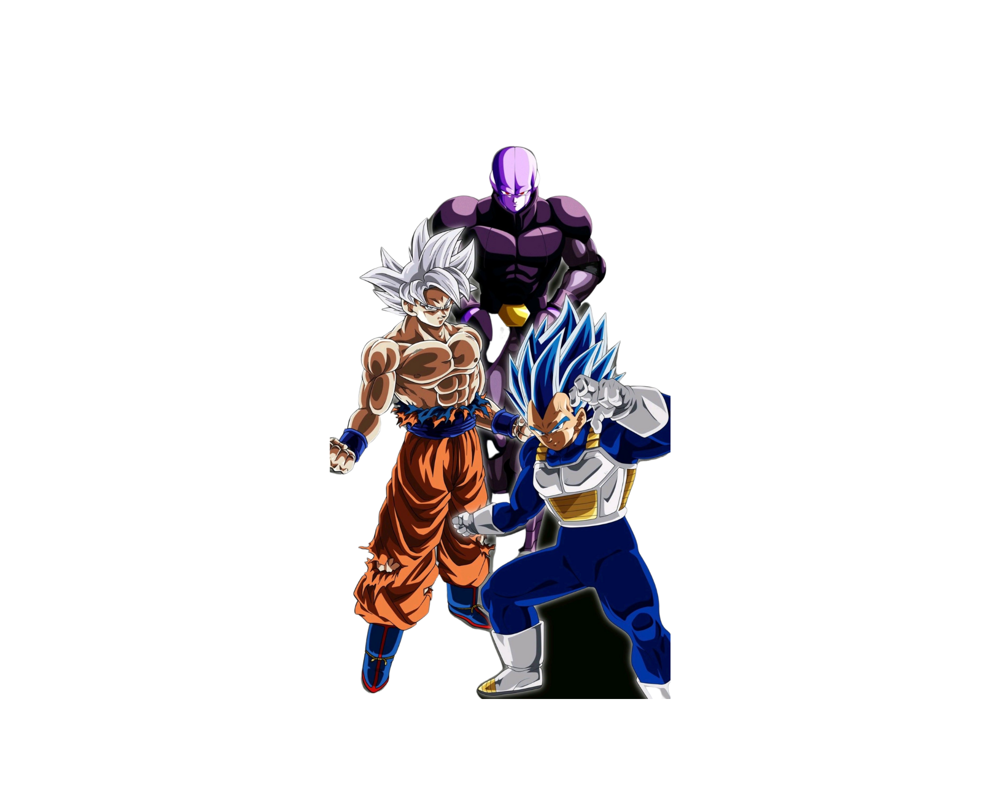

Apesar da Terra estar em um período de calmaria, Goku se recusa a parar de treinar constantemente. O que ele não imaginava era que seu novo inimigo seria Broly, um poderoso super saiyajin sedento por vingança, que deseja destruir todos que encontrar pela frente.
